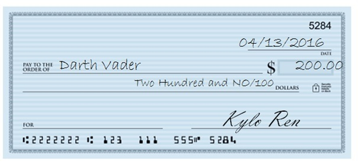

While debit cards and online purchases are prevalent it is still relevant to lean how to properly write a check. Writing a check improperly could lead to delays in payment or check tampering. When a check is properly written it ensures that the proper party is paid the amount you intended. Knowing how to place stop payments on a check and automatic drafts puts you in control of what checks or payments can debited from your account.
When you first open your new checking account, you'll need to order checks. Because the account is new, verification and shipping for checks can take up to two weeks. Chances are you're going to need checks before you have them. Banks understand this and most will provide you with temporary checks when you open the account if you request them. Temporary checks can be used just like regular checks but they generally do not have check numbers or your personalized name and address on the upper left corner. These checks are often turned down because they appear 'fake.' In fact, some companies won't accept temporary checks to set up direct deposit because of their appearance. Some ways that you can help alleviate fears regarding temporary checks is to ask your bank if they can type your name and address onto the checks. Some banks, such as Bank of America and Wells Fargo, can print small quantities of temporary checks with this information included on them. Another good idea when using temporary checks is to write in your own check number if they are not included on the check. Keep a record of each check number in a check register or on your phone. This may be helpful if you need to place a stop payment on one of those temporaries later or need to find a check on your statement.
When you write a check, you want the person or company you are paying to get their money as promptly as possible. Checks that are not filled in completely or correctly may pose a problem for the person you are paying, and as a result you may suffer some negative effects, like ruining your reputation, or being hounded by debt collectors.
Question
When you write a check, you want the person or company you are paying to get their funds in as timely a manner as possible. You can help make the process easy by writing legibly.Make sure you write the payee's name clearly. If you don't know how to spell it, ask. Tellers can only accept checks when the person presenting them provides an ID that matches what is written on them.
Make sure the numerical value matches the written value. Bank policies will usually force a teller to go by the written amount because it is commonly accepted that the written portion is more intentional and therefore correct. This could cause serious issues for the people you are paying, and in some cases more work for yourself, as you will need to write additional checks to correct these issues.
Be careful about using "and"/"or" when paying multiple people. If you write a check to "Bob and Julie Smith," then either both Bob and Julie must be present to cash the check, or they must deposit the check into an account with both their names on it. If you write "Bob or Julie Smith," either person can cash the check without the other's endorsement. How you want the funds to be divided may impact how you write the payee line.
Remember!
Both people know and are aware of the funds
One person can cash the check without telling the other which may prove beneficial if one of the parties is not available.
Question
Which of the following statements are true about the payee line on checks?Start writing your numbers farthest to the left of the written line. Always draw a line through any remaining blank space. This will prevent alterations to your checks after you have written them.
Question

Based on the concepts covered in Chapter 4, the above check does not follow the best practices for writing checks. Which of the following would correct the issue?An endorsement is the signature written on the back of the check when it is brought to the bank to be deposited or cashed. Almost all checks have a specific area designated for signing and will typically include a cutoff line that states something to the effect of "do not write, sign, or stamp below this line."
It is commonly believed that you must sign the check in front of the teller, but most banks do not enforce this rule, because if you bring a lot of checks, it will take a while to sign them, causing a long line to form behind you.
Some people believe that checks will not be accepted if the signature is not in the correct place. The cutoff line ensures that the bank has enough space to place their own endorsement or tracking number on the check when they send it to a data center or another bank. If you need to write below this line, it is generally fine, but make sure to be economical about how much space you take. If you realize that you have signed the wrong end of the check, re-sign on the correct end and draw a single line through the incorrect signature. Do not scribble it out with multiple lines. Keeping the back tidy helps the bank process it correctly.
Sometimes, you may need to place a stop payment on a check. This can happen because the check got lost in the mail, the person you paid lost or accidently destroyed it, or the person you paid did not fulfill an obligation that the funds were meant for. An example of the latter might be if you pay someone for an item that they will bring you later, but they never come back with the item. In that case, you would want to place a stop payment so that they never receive funds for the item you never received.
In order to place a stop payment, the bank will need specific information from the check. This information includes:
If you can only provide the check number and the amount, you can still place a stop payment, though it is more effective to know all the information. If you do not have the check number or the amount, you won't be able to stop the check at all. This is because the bank uses the above information to sift through millions of incoming checks every day. Any check that passes through the system with just the check number and the amount you have stated will be reviewed more closely. If you cannot provide that information, the bank cannot reduce the number of checks that need to be checked and the check may accidentally be paid anyway.
As is usually the case, you will probably have to pay a fee on a stop payment. You should ask the bank how much the fee is before you submit it. If the check you are trying to stop from paying is significantly smaller than the fee, you will actually pay more to have the check stopped than if it was cashed.
Another thing to remember is that stop payments generally only last six months from the date you place them. Checks are only good for six months past the date written on them, meaning that after that six months passes, the check is considered stale-dated. We should point out that accepting stale-dated checks is up to the bank, who may cash it anyway. If you have a stop payment that expires, you may want to renew it for another six-month term so that the bank doesn't accidentally cash the check after the stale-date.
Question
In order to place a stop payment, the bank will need specific information from the check. This information includes:Question
After how long should you renew a stop payment on a check?People often assume that stop payments apply only to checks, but you may also stop payment on automatic payments that come out of your account. Some examples of automatic payments include gym memberships, utility or insurance payments, and credit card payments.
The process is very similar to stopping payment on a check; however, since payments of this nature sometimes vary by amount, you must sign additional forms stating that you no longer wish any future payment to a particular company to be paid. Additionally, because these payments get processed electronically and the window to catch a payment is much smaller, you need to give notice of stop payment well before the payment you are trying to stop reaches the bank. Most banks will include a clause on their forms indemnifying themselves for payments that go through if the stop payment was not submitted a certain length of time before it went through.
Question
Stop payments on an ACH or electronic payment are different from regular check stops because: